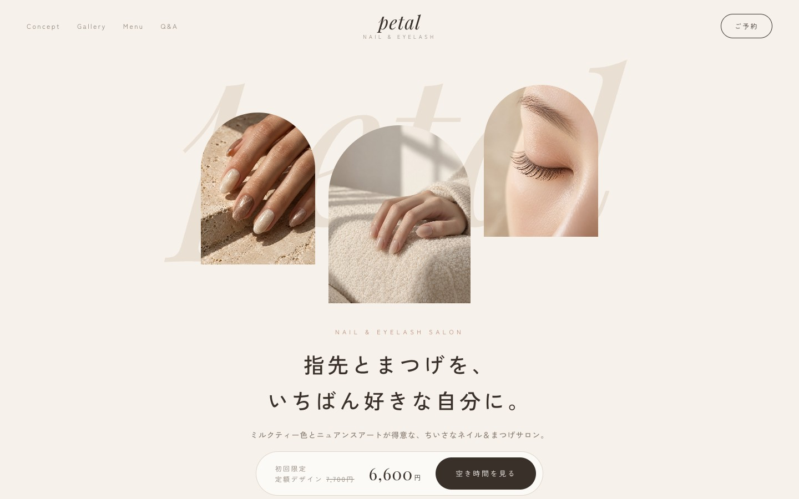
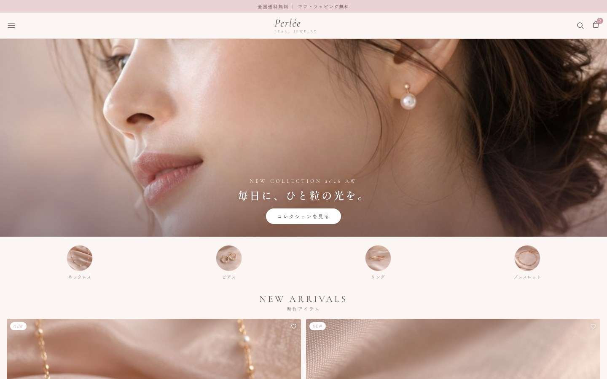
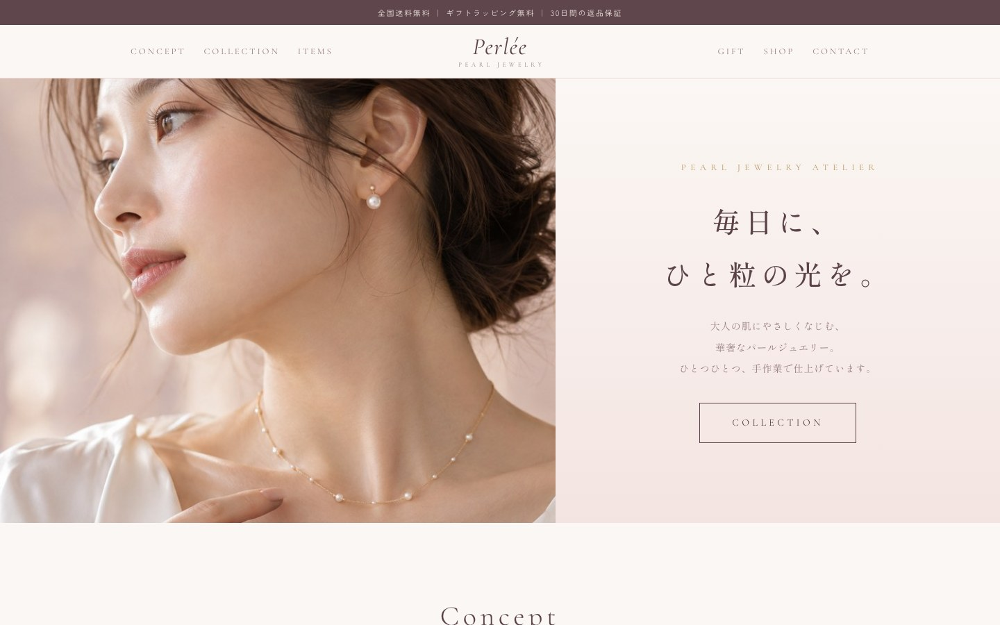
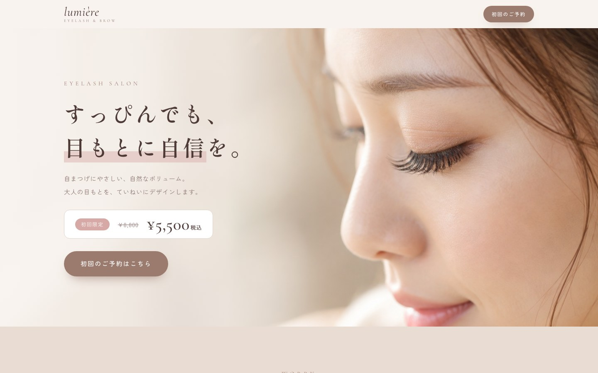
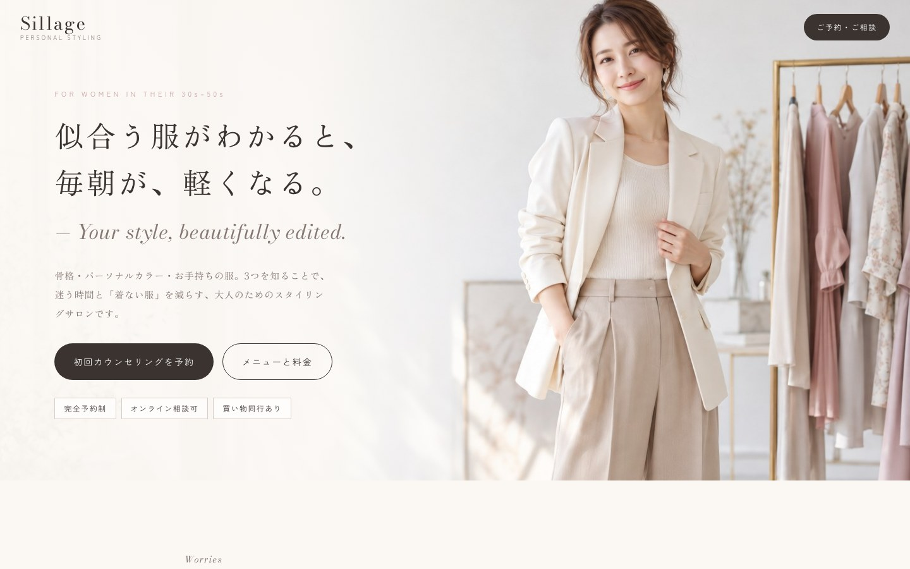
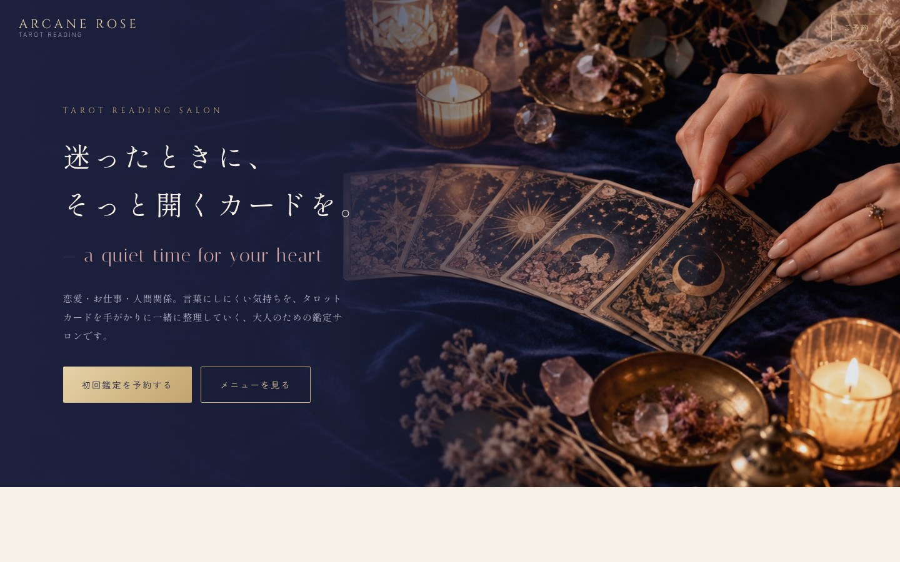
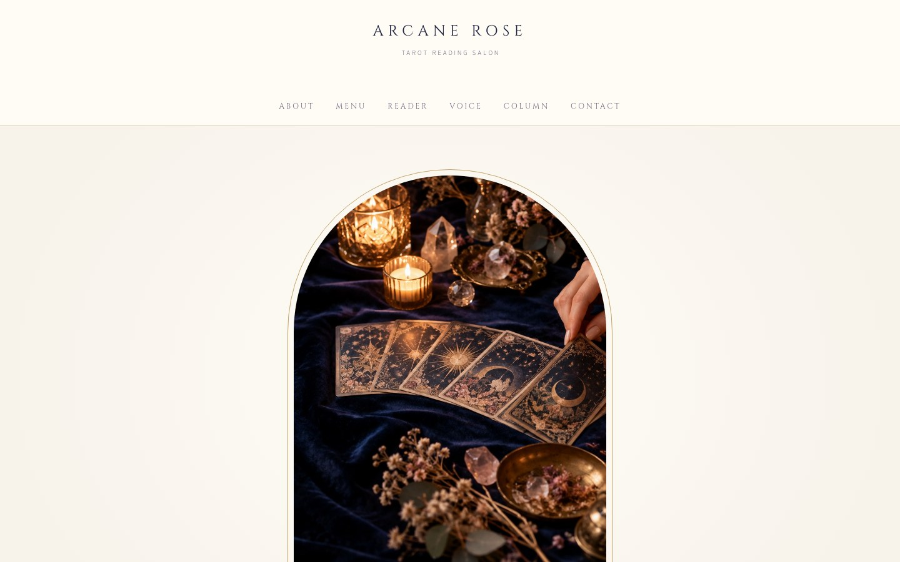

エステサロンのLPやわらか上品なカード型｜ぽよんと弾む動きページを見る →

ネイル・まつげサロンのLPミルクティー色の大人ミニマルページを見る →

化粧品ブランドの商品LP黒×ゴールドの高級誌風ページを見る →

美容室のホームページ雑誌のような罫線レイアウトページを見る →

ジュエリー通販のLPパール色のやさしいEC｜新作・カート付きページを見る →

ジュエリーショップのホームページブランドの世界観を伝えるショップサイトページを見る →

マツエクサロンのLP初回限定から予約まで迷わない導線ページを見る →

マツエクサロンのホームページ左メニューのホテルのような静けさページを見る →

ファッションコンサルのLP雑誌のルックブック風｜番号つきの構成ページを見る →

ファッションコンサルのホームページグレージュ×くすみピンクの上品なサイトページを見る →

タロット占いのLPミッドナイトブルー×シャンパンゴールドページを見る →

タロット占いのホームページカードの額縁とアーチ写真の世界観ページを見る →